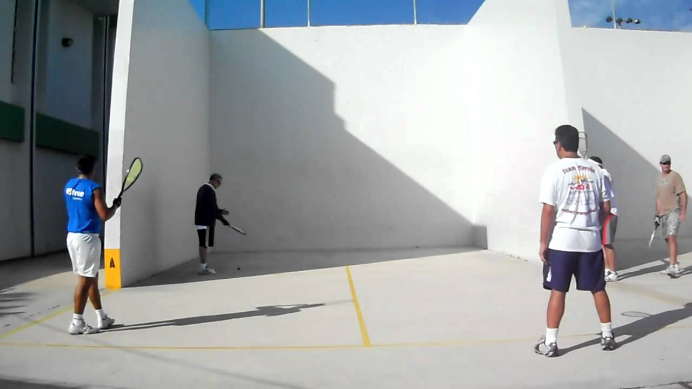

Racquetball is a very entertaining sport, any one can play it. It does not require a great physical shape, and you can even play it alone. Of couse we are talking about playing racquetball for fun. Once you enter into the competition mode, racquetball as any other sport will require training.
This game is divided in two modes:
Indoor: Indoor mode is played inside a completly closed room, known as racquetball court, usually in private facilities.
Indoor Court
Outdoor: Outdoor mode is played in open courts that are found usually in public parks.

Outdoor Court
Racquetball tournaments and players standing is internationally organized by the IRT
will continue...
Me in the racquetball world
I have been playing racquetball on and off, for the last 15 years. I first only played for fun, but recently I started training for racquetball and trying to move up my level.
I consider myself a good player, but I would like to be awesome. I currently play tournaments in the A or Open division. but I have not been able to win a tournament in those divisions.
I am currently training with a professional instructor, I am learning a lot every week. I hope I will become of the the best players in florida. I just dont have enought time to practice latly with the university exercises plus a full time and partime job.